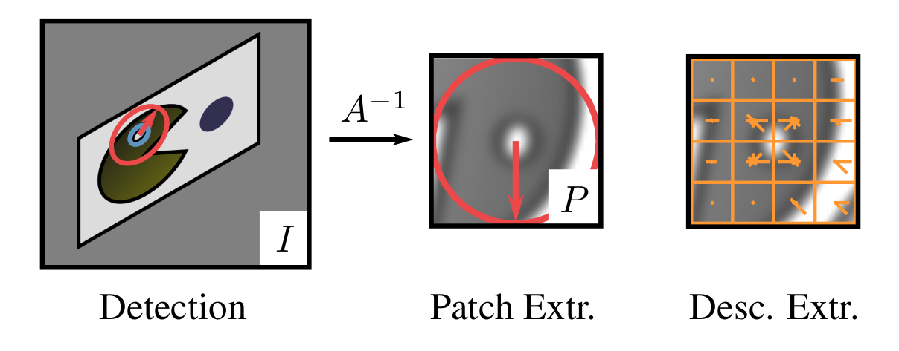
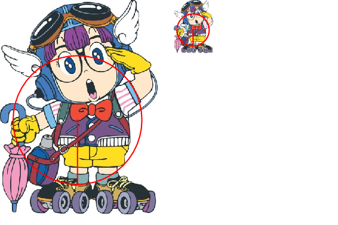
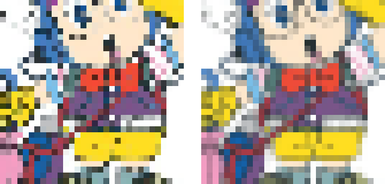
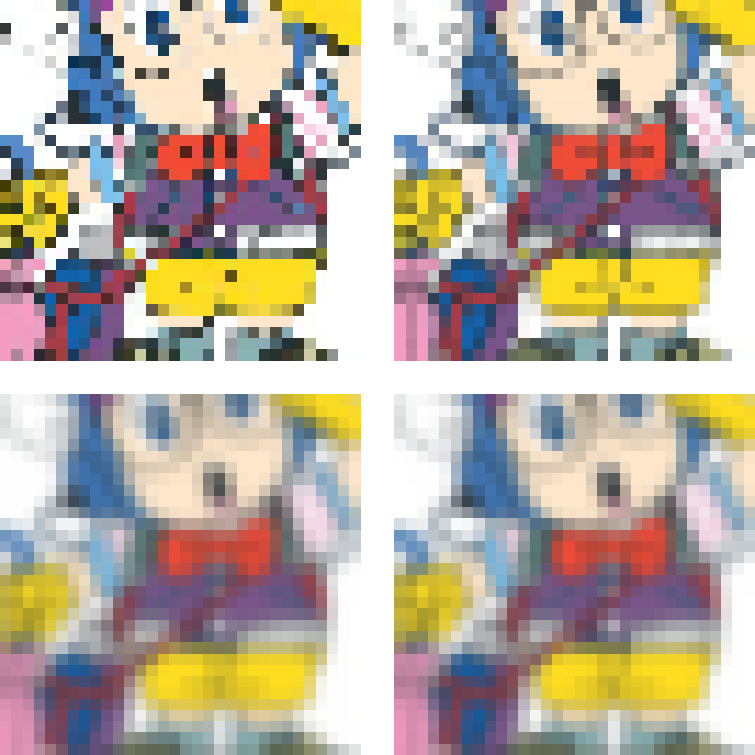
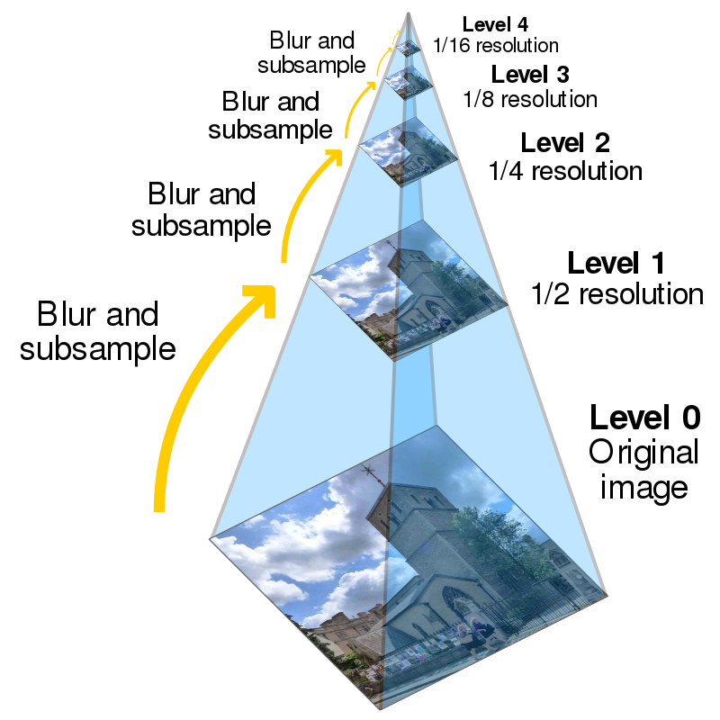
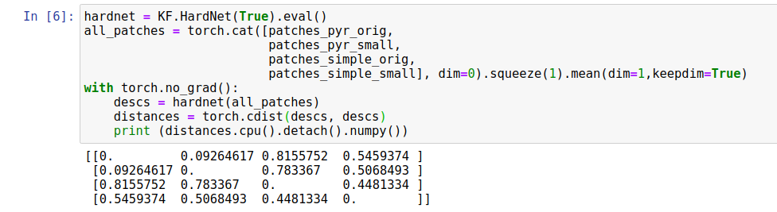
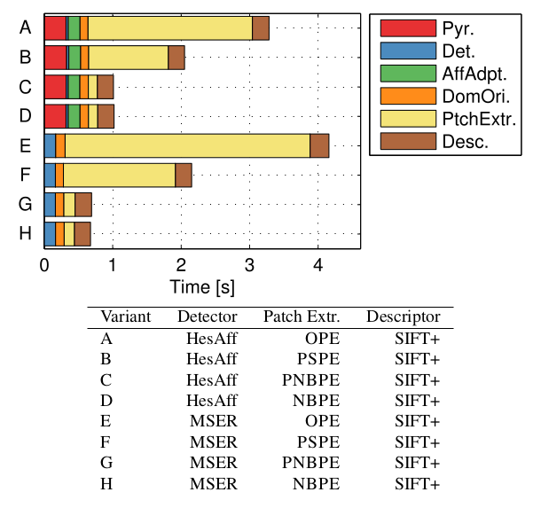
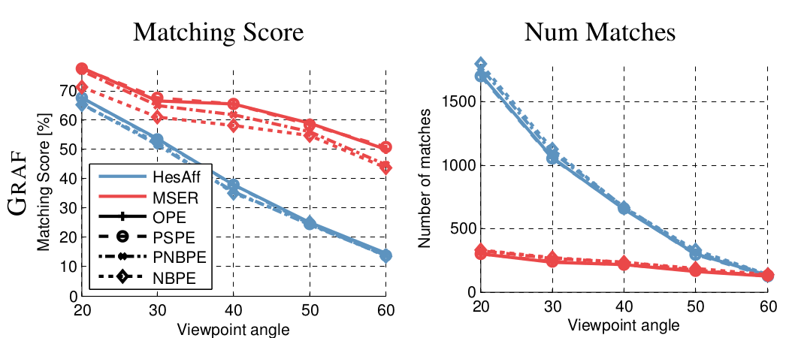

When working with local features one needs to pay attention to even a smallest details, or the whole process can be ruined. One of such details is how to extract the patch, which will be described by local descriptor such as SIFT or HardNet.

Unfortunately, we cannot just extract patch from the image by cropping the patch and then resizing it. Or can we? Let’s check. We will use two versions of image: original and 4x smaller one and would like to extract same-looking fixed size patch from both of them. The patch we want to crop is showed by oriented red circle.

Aliasing
And here what we get by doing a simple crop and resize to 32x32 pixels.

Doesn’t look good. It is called “aliasing” - a problem, which arise when we are trying to downscale big images into small resolution. Specifically: the original image contains finer details, than we could represent in thumbnail, which leads to artifacts. 
The solution: anti-aliasing
The solution, which follows out of sampling theorem is known: remove the details, which cannot be seens in small image first, then resample image to small size.
The simplest way to remove the fine details is to blur image with the Gaussian kernel.
Lets do it and compare the results. 
By the way, you can try for yourself, all the required code is here, in kornia-examples
Performance
The problem is solved. Or is it?
The problem with properly antialiased patch extraction is that it is quite slow for two reasons. First, blurring a whole image is a costly operation. But, the worst part is that the required amount of blur depends on the patch size in the original image, or, in other words, keypoint scale. So for extracting, say 8000 patches, one needs to perform blurring 8000 times. Moreover, if one wants to extract elongated region and warp it to the square patch, the amount of blur in vertical and horizontal directions should be different!
What can be done? Well, instead of doing blurring 8000 times, one could create so called scale pyramid and then pick the level, which is the closest to optimal one, predicted by theorem.

This is exactly, what kornia function extract_patches_from_pyramid does.
Also - I have a bit cheated with you above: the “anti-aliased” patches were actually extracted using the function above.
How it impacts local descriptor matching?
Let’s do the toy example first - describe four patches we have in the example above with HardNet descriptor and calculate the distance between them.

So the descriptor difference between antialiased patches is 0.09 and between naively extracted – 0.44. 0.09 is not a big deal, but 0.44 is a lot, actually.
Let’s move to the non-toy example from the paper devoted to this topic: “A Few Things One Should Know About Feature Extraction, Description and Matching”.
The original data is lost I am too lazy to redo the experiments for the post, so I will just copy-past images with results. Here are abbrevations used in the paper:
OPE – Optimal Patch Extraction. The most correct and slow way of extracting, including different amount of bluring in different directions.
NBPE – No-Blur Patch Extraction. The most naive way we started with
PNBPE – Pyramid, No-Blur Patch Extraction. The one, we described above - sampling patches from scale pyramid.
PSPE Pyramid-Smoothing Patch Extraction. Pick the matching pyramid level and then add anisotropic blur missing.
As you can see, doing things optimally is quite slow. 
Now let’s see how it influences performance.

It looks like that influence is smaller than we thought. But recall that the experiment above is for SIFT descriptor only. Doing pyramid helps for the small viewpoint change almost as good, as going fully optimal, but with increasing the viewpoint difference, such approximation degrades. Moreover, it influnces MSER detector much more that than Hessian-Affine.
How does it work with deep descriptors like HardNet or SoSNet? That is the question which not answered yet. Drop me a message if you want to do it yourself and we can do the follow-up post together.
References
[PatchExtraction2014] K. Lenc, J. Matas and D. Mishkin, ``A few things one should know about feature extraction, description and matching’’, Proceedings of the Computer Vision Winter Workshop, 2014.
Everything you (didn’t) want to know about image matching